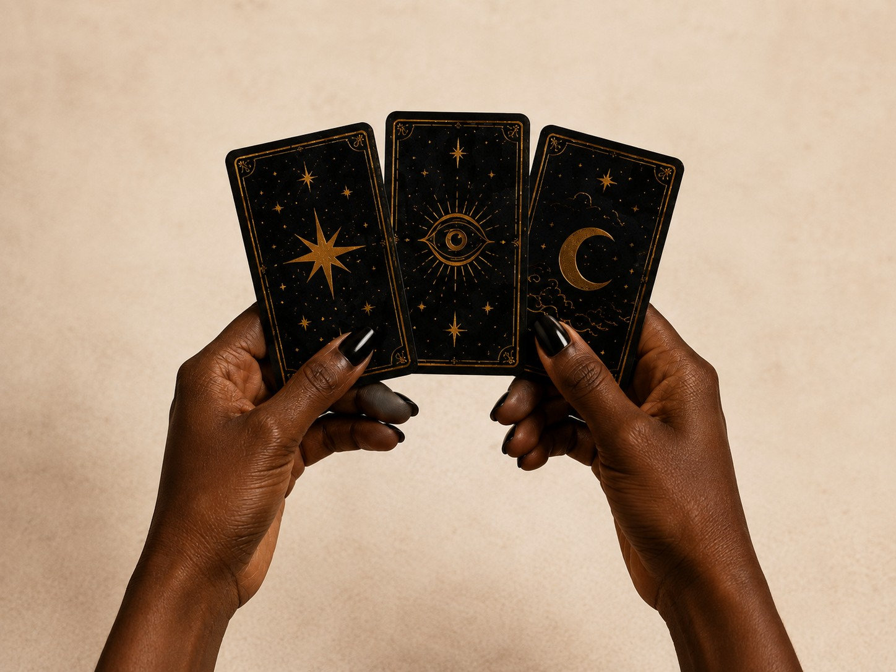

Private Events
Intuitive readings that add a personal and memorable touch to birthdays, showers, celebrations, and more.
Thoughtful tarot readings for private events, girls nights, and themed gatherings. Personal, reflective, and designed to feel like part of the evening.
Booking InquiryThe Origin Of
The Midnight Draw was created from a lifelong pull toward the unseen.
Years of studying tarot, intuition, and storytelling shaped a practice that blends ancient wisdom with modern insight. What began as a personal ritual became a way to offer others clarity, reassurance, and a little magic of their own.
Each reading is a space to pause, reflect, and remember what you already know. It is not about fortune telling. It is about reconnecting with your inner guidance and the strength you carry.
Intuitive readings that add a personal and memorable touch to birthdays, showers, celebrations, and more.
A chance to laugh, connect, and discover meaningful insights in a relaxed and supportive space.
Perfect for seasonal parties, book clubs, witchy nights, and any theme that welcomes a touch of magic.
The Experience
We explore the past, present, and future through a classic three card spread. Each card brings insight, perspective, and a moment of connection that feels just right.


A Reflective Approach
Tarot is a reflective tool, not fortune telling. These readings create space for intuition, perspective, and mindful choices you can trust.
Let’s create a meaningful experience your guests will remember.
Booking Inquiry